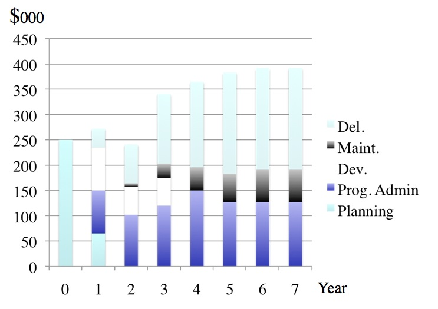
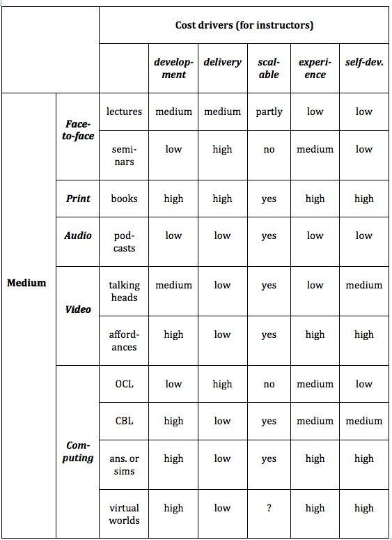

9.4 Custos

Um elemento de áudio foi excluído desta versão do texto. Você pode ouvi-lo on-line aqui: https://pressbooks.bccampus.ca/teachinginadigitalagev2/?p=230

9.4.1 Uma revolução nas mídias
Até há cerca de dez anos, o custo constituía um fator de exclusão principal que influenciava a escolha da tecnologia (Hülsmann, 2000, 2003; Rumble, 2001; Bates, 2005). Para fins educativos, por exemplo, o áudio (aulas gravadas, rádio, audiocassetes) apresentava custos muito inferiores aos materiais impressos, os quais, por sua vez, eram mais econômicos do que a maioria das formas de aprendizagem baseada no computador, que se revelavam menos dispendiosas do que o vídeo (televisão, videocassetes ou videoconferência). Estas mídias eram habitualmente encaradas como custos adicionais ao ensino tradicional, ou como recursos demasiado dispendiosos para substituir as aulas presenciais, exceto no âmbito da educação a distância desenvolvida em escala considerável.
Contudo, registrou-se uma redução acentuada no custo de desenvolvimento e difusão de todas as mídias (à exceção do ensino presencial) na última década, decorrente de vários fatores:
- rápidos desenvolvimentos em tecnologias de consumo, como celulares, que viabilizam a criação e transmissão de texto, áudio e vídeo pelos próprios utilizadores finais a baixo custo;
- compressão de mídias digitais, permitindo que transmissões de vídeo ou canais de televisão com elevada largura de banda sejam distribuídos através de redes móveis, linhas fixas e internet a custos viáveis (pelo menos nos países desenvolvidos);
- melhorias nos softwares de edição e produção de mídias, facilitando a criação e distribuição de conteúdos por parte de utilizadores não profissionais;
- volume crescente de recursos educacionais abertos (REA) com base em mídias, que constituem materiais de aprendizagem já desenvolvidos e gratuitos para utilização por professores e estudantes.
Consequentemente, a boa notícia assenta no fato de que, em termos gerais e em princípio, o custo já não deveria constituir um fator de exclusão automático na escolha das mídias. Se aceitar este pressuposto, poderá ignorar o restante desta seção. Selecione a combinação de mídias que melhor responde às suas necessidades pedagógicas e não se preocupe com qual delas poderá ter custos mais elevados. De fato, sob uma perspectiva exclusivamente financeira, seria viável argumentar que a substituição do ensino presencial pela aprendizagem puramente on-line representaria hoje uma redução de custos.
Na prática, contudo, os custos podem variar significativamente quer entre diferentes mídias, quer no âmbito da mesma mídia, dependendo do contexto e da concepção pedagógica. Dado que, sob a perspectiva do professor, o principal custo se prende com o seu tempo de dedicação, torna-se essencial compreender quais os principais indutores (drivers) de custos, isto é, quais fatores estão associados ao acréscimo de despesas, consoante o contexto e a mídia em utilização. Estes parâmetros são menos influenciados pela evolução tecnológica, pelo que constituem princípios fundamentais no momento de analisar os custos das mídias educativas.
Infelizmente, a diversidade de fatores que influenciam o custo real da utilização de mídias na educação torna esta discussão complexa (para uma abordagem aprofundada, ver Bates e Sangrà, 2011). Deste modo, procurarei identificar os principais indutores de custos, apresentando depois uma matriz simplificada de orientação sobre a influência destes fatores nos custos de diferentes mídias, incluindo o ensino presencial. Esta orientação deve ser interpretada como um modelo heurístico, funcionando como uma introdução aos custos das mídias.
9.4.2 Categorias de custos
As principais categorias de custos a ponderar na utilização de mídias e tecnologias educativas, sobretudo no ensino híbrido ou on-line, são as seguintes:
9.4.2.1 Desenvolvimento
Trata-se das despesas associadas à compilação ou criação de materiais de aprendizagem utilizando mídias ou tecnologias específicas. Delineiam-se subcategorias:
- custos de produção: a gravação de um vídeo, a estruturação de uma seção da disciplina num LMS ou a criação de um ambiente virtual. Nestas despesas inclui-se o tempo de dedicação de pessoal técnico especializado, como web designers, especialistas de mídias ou informáticos, bem como os custos diretos de design ou produção de vídeo;
- tempo de dedicação do professor: o trabalho letivo associado ao planejamento, concepção e produção dos materiais. O seu tempo constitui um recurso financeiro e representa provavelmente o custo individual mais elevado na utilização de tecnologias educativas. Sobretudo, ao dedicar tempo ao desenvolvimento de materiais, o docente deixa de realizar outras atividades, como a investigação científica ou a interação com os estudantes, registrando-se um custo real, ainda que não quantificado monetariamente;
- direitos autorais (copyright): o processo de obtenção de autorizações para a utilização de materiais de terceiros, como fotografias ou trechos de vídeo. Esta despesa reflete-se habitualmente mais no tempo despendido na pesquisa e regularização de direitos do que em termos monetários diretos;
- o tempo de dedicação de um designer instrucional.
Os custos de desenvolvimento assumem geralmente um caráter fixo (investimento inicial único) e revelam-se independentes do número de estudantes. Uma vez desenvolvidos os materiais, estes tornam-se escaláveis, na medida em que podem ser utilizados por qualquer volume de alunos sem acréscimo de despesas de produção. A utilização de recursos educacionais abertos pode reduzir significativamente os custos de desenvolvimento.
9.4.2.2 Transmissão (Delivery)
Esta categoria engloba os custos associados às atividades pedagógicas desenvolvidas durante a docência da disciplina, incluindo o tempo de dedicação do professor na interação com os estudantes, correção e classificação de trabalhos, bem como o tempo de outros profissionais de apoio, como assistentes de ensino, docentes convidados para turmas adicionais, designers instrucionais e técnicos de suporte.
Devido à relevância dos fatores humanos — como o tempo de docência e o apoio técnico no ensino baseado em mídias —, os custos de transmissão tendem a aumentar com o acréscimo do número de estudantes, repetindo-se em cada edição da disciplina. Trata-se, por conseguinte, de despesas recorrentes. Contudo, na transmissão baseada na internet, o custo tecnológico direto tende a aproximar-se de zero.
9.4.2.3 Manutenção
Após a criação dos materiais de uma disciplina, estes exigem manutenção. Ligações web (URLs) expiram, leituras recomendadas podem deixar de estar disponíveis e, sobretudo, novos avanços científicos na área exigirão atualizações de conteúdos. Assim, após o lançamento da disciplina, registram-se custos contínuos de manutenção.
Embora designers instrucionais ou técnicos de mídias possam assegurar parte da manutenção, caberá aos docentes tomar decisões sobre a atualização ou substituição de conteúdos. A manutenção de uma única disciplina não consome tempo excessivo; contudo, se o professor for responsável pelo planejamento e docência de vários cursos on-line, o tempo de manutenção pode tornar-se significativo.
Os custos de manutenção são geralmente independentes do número de estudantes, mas dependem do volume de disciplinas sob a responsabilidade do professor, repetindo-se anualmente.
9.4.2.4 Custos indiretos (Overheads)
Esta categoria inclui as despesas de infraestrutura geral, como licenciamentos de LMS, tecnologias de gravação de aulas e servidores de vídeo. Trata-se de custos reais compartilhados por diversas disciplinas e não imputados a um único curso. São habitualmente considerados despesas institucionais e não condicionam a decisão individual do docente sobre as mídias a aplicar, desde que os serviços se encontrem disponíveis e não sejam faturados diretamente à disciplina.
Contudo, se um novo programa on-line for estruturado num modelo de recuperação integral de custos, deverão ser imputadas as despesas indiretas institucionais. Algumas equivalem às das disciplinas presenciais (ex.: contribuição para os serviços centrais da reitoria), mas outras despesas estruturais associadas aos estudantes presenciais, como a manutenção física dos edifícios, não se aplicam a programas totalmente on-line (fator que explica por que razão o custo líquido de um programa on-line se apresenta habitualmente inferior ao de um programa presencial).
9.4.3 Indutores de custos
Os fatores principais que condicionam as despesas são:
- o desenvolvimento e produção de materiais;
- a transmissão e docência dos materiais;
- o volume de estudantes (escalabilidade);
- a experiência prévia do docente no manuseamento da mídia;
- o modelo de trabalho: desenvolvimento autônomo (self-development) ou colaboração com profissionais de suporte.
A produção de materiais baseados na tecnologia, como um vídeo ou um site letivo, constitui um custo fixo independente do número de estudantes. Contudo, as despesas de produção variam consoante a concepção pedagógica. Engle (2014) demonstrou que, dependendo da metodologia de produção de vídeo, as despesas de desenvolvimento de um MOOC podiam registar variações significativas (o custo da produção em estúdio de televisão profissional era seis vezes superior ao registado na gravação efetuada pelo próprio professor num laptop).
No entanto, uma vez produzidos, os custos revelam-se independentes do volume de alunos. Deste modo, quanto maior for o investimento inicial no desenvolvimento da disciplina, maior será a necessidade de aumentar o número de estudantes para reduzir o custo médio por aluno (ou seja, quanto maior o volume de alunos, maior a justificação para investir na qualidade de produção). No caso dos MOOCs (cujo desenvolvimento custa cerca do dobro de um curso on-line para obtenção de créditos letivos num LMS — Universidade de Ottawa, 2013), o volume de aprendizes é tão elevado que o custo médio por aluno se revela residual. Deste modo, delineiam-se oportunidades de economia de escala na produção de conteúdos digitais, desde que seja viável aumentar o número de inscritos, evidenciando o potencial de escalabilidade de uma mídia.
Paralelamente, registram-se custos na docência da disciplina após o seu desenvolvimento. Trata-se de despesas variáveis, que crescem com o aumento do tamanho da turma. Para manter a interação professor-estudante em níveis adequados nos fóruns de discussão e na correção de tarefas, a relação docente-aluno deve ser equilibrada (ex.: entre 1:25 e 1:40, consoante a área disciplinar e o nível da disciplina). O aumento do número de estudantes exigirá maior tempo de docência ou a contratação de professores adicionais, elevando os custos de transmissão. Os MOOCs constituem exceção a esta lógica. O seu modelo assenta na ausência de apoio letivo direto aos alunos, registrando custos de transmissão nulos. No entanto, este fator constitui provavelmente o principal motivo para as baixas taxas de conclusão registradas nestas plataformas.
Deste modo, poderá revelar-se vantajoso despender mais recursos na fase inicial de concepção de materiais interativos se este investimento resultar na redução das exigências de interação docente-aluno. A título de exemplo, uma disciplina de matemática pode recorrer a sistemas de testes e avaliações automáticos, simulações, diagramas e repositórios de respostas a dúvidas frequentes, reduzindo ou eliminando a necessidade de correção manual de tarefas. Nestes moldes, torna-se viável gerir proporções de 1:200 ou mais sem perda significativa de qualidade pedagógica.
Adicionalmente, a experiência prévia na utilização de uma determinada mídia ou modelo de transmissão assume relevância. A primeira experiência de concepção de um podcast exige mais tempo do que as produções subsequentes. Contudo, algumas tecnologias exigem curvas de aprendizagem mais complexas. Um indutor de custo associado prende-se com a modalidade de trabalho: desenvolvimento autônomo (self-development) ou colaboração com profissionais de mídias. O trabalho autônomo consumirá, de modo geral, mais tempo do que o desenvolvimento em colaboração com especialistas.
A colaboração com profissionais de mídias na concepção de conteúdos digitais apresenta vantagens. Estes especialistas garantem a qualidade técnica do produto final e poupam tempo ao professor ao assumirem tarefas de edição, escolha de programas adequados e alojamento dos materiais. Os designers instrucionais podem sugerir aplicações adequadas de diferentes mídias para alcançar os objetivos de aprendizagem pretendidos. Deste modo, tal como no planejamento educativo geral, a abordagem em equipe revela-se eficaz, e a colaboração profissional apoia o controle do tempo letivo despendido no desenvolvimento de mídias.
Por fim, as decisões de design pedagógico assumem caráter crítico. Os custos são condicionados pelas opções tomadas no âmbito da mídia selecionada. Por exemplo, os indutores de custos diferem substancialmente entre aulas expositivas presenciais e aulas laboratoriais ou seminários. Do mesmo modo, o vídeo pode ser aplicado meramente para gravar aulas expositivas (talking heads) com sistemas de gravação de aulas, ou para explorar as affordances do meio (ver Capítulo 8), como a demonstração de processos práticos. A informática apresenta uma diversidade crescente de opções pedagógicas, como a aprendizagem colaborativa on-line (OCL), animações, simulações ou mundos virtuais.
A Figura 9.4.3 procura sistematizar a complexidade das variáveis de custos, focando na tomada de decisões do professor. Deve ser interpretada como um modelo de reflexão. Outros fatores poderiam ser acrescentados (como a utilização de mídias sociais ou a manutenção de materiais). Apresento as minhas classificações subjetivas para cada campo, assentes na prática profissional. Tomei o ensino presencial convencional como parâmetro de referência ("custo médio"), ordenando depois os restantes campos de acordo com a estimativa de custos superiores ou inferiores para cada mídia específica. Outros profissionais poderão formular classificações diversas.



Embora o tempo despendido no desenvolvimento e transmissão da aprendizagem através das tecnologias condicione a escolha da ferramenta pelo professor, não se trata de uma relação linear. Por exemplo, a concepção de uma disciplina on-line de qualidade recorrendo a vídeo e materiais textuais exige mais tempo de preparação prévia do que a lecionação em sala de aula convencional. Contudo, essa disciplina on-line poderá exigir menos tempo na fase de docência e transmissão ao longo de vários anos, dado que os estudantes realizam o estudo de forma mais autônoma, reduzindo as interações diretas com o professor. Deste modo, reitera-se que o design pedagógico constitui o fator crítico na avaliação das variáveis de custos.
Em suma, na perspectiva do professor, o tempo constitui a variável crítica de custos. As tecnologias que exigem muito tempo tendem a registar taxas de utilização inferiores às daquelas que são intuitivas e poupam tempo. Contudo, as opções de design pedagógico influenciam substancialmente o tempo a despender com qualquer mídia, e a possibilidade de professores e estudantes criarem as suas próprias mídias educativas assume relevância crescente.
9.4.4 Questões para reflexão
9.4.4.1 Gravação de aulas vs LMS: fatores de custos
Em anos recentes, o corpo docente universitário tem demonstrado preferência por sistemas de gravação de aulas e transmissões de vídeo para o ensino on-line, em particular em instituições onde a aprendizagem on-line é recente, devido ao fato de esta abordagem se apresentar "mais simples" do que o planejamento e criação de conteúdos textuais em sistemas de gestão de aprendizagem (LMS). A gravação de aulas assemelha-se à metodologia de aula presencial tradicional, exigindo menores alterações nas práticas do docente.
Sob a perspectiva pedagógica (consoante a área disciplinar), contudo, a gravação de aulas pode revelar-se menos eficaz do que uma disciplina estruturada em modelos de aprendizagem colaborativa on-line com fóruns de debate. Adicionalmente, na perspectiva institucional, os sistemas de gravação de aulas apresentam custos tecnológicos superiores aos de um LMS. Naturalmente, a gravação de aulas é frequentemente aplicada em articulação com um LMS. O que as diferentes tecnologias promovem é a alteração da distribuição do tempo de dedicação do docente entre as fases de desenvolvimento e de docência/transmissão. Mídias baseadas num LMS podem exigir maiores custos iniciais de desenvolvimento, mas registam custos anuais de docência e manutenção inferiores aos do ensino presencial.
9.4.4.2 O fator estudante
Adicionalmente, os próprios estudantes podem hoje utilizar os seus dispositivos para conceber conteúdos multimídia para tarefas letivas ou fins de avaliação sob a forma de e-portfólios. As mídias viabilizam a transferência de parte do esforço de aprendizagem do professor para o estudante. Permitem que os alunos dediquem mais tempo às tarefas, e dispositivos de baixo custo, como celulares ou tablets, capacitam os estudantes a criar materiais próprios, demonstrando o seu percurso de aprendizagem de forma concreta. Isto não significa que a presença docente deixe de ser necessária no estudo on-line, mas viabiliza uma redistribuição de onde e de que forma o professor despende o seu tempo no apoio aos alunos.
9.4.5 Conclusão
O custo constitui um fator crítico na escolha das mídias. Para os docentes, o principal custo traduz-se no tempo de dedicação. Contudo, torna-se relevante analisar o tempo numa perspectiva plurianual da disciplina e não apenas na fase de produção ou preparação inicial. Mídias concebidas com rigor técnico exigem maior tempo de produção, mas poupam tempo na docência e transmissão, sobretudo se incorporarem tarefas para os alunos e feedback automatizado. Isto justifica que algumas instituições disponibilizem fundos específicos para projetos de inovação pedagógica ou ensino tecnológico, libertando tempo dos professores para tarefas de design e desenvolvimento.
As mídias diferem significativamente quanto à distribuição de custos entre as fases de desenvolvimento, transmissão, manutenção e despesas indiretas. O ensino presencial apresenta custos de desenvolvimento mínimos, mas custos de transmissão elevados em termos de tempo do professor; uma disciplina on-line num LMS apresenta maior equilíbrio entre os custos de desenvolvimento e de transmissão. Os jogos sérios registram geralmente custos de desenvolvimento elevados e despesas de transmissão residuais.
Independentemente desta distribuição, o custo continua a constituir uma variável essencial na escolha das mídias.
Referências
Bates, A. (2005) Technology, e-Learning and Distance Education London/New York: Routledge
Bates, A. and Sangrà, A. (2011) Managing Technology in Higher Education San Francisco: Jossey-Bass
Engle, W. (2014) UBC MOOC Pilot: Design and Delivery Vancouver BC: University of British Columbia
Hülsmann, T. (2000) The Costs of Open Learning: A Handbook Oldenburg: Bibliotheks- und Informationssytem der Universität Oldenburg
Hülsmann, T. (2003) Costs without camouflage: a cost analysis of Oldenburg University’s two graduate certificate programs offered as part of the online Master of Distance Education (MDE): a case study, in Bernath, U. and Rubin, E., (eds.) Reflections on Teaching in an Online Program: A Case Study Oldenburg, Germany: Bibliothecks-und Informationssystem der Carl von Ossietsky Universität Oldenburg
Rumble, G. (2001) The Cost and Costing of Networked Learning Journal of Asynchronous Learning Networks, Volume 5, Issue 2
University of Ottawa (2013) Report of the e-Learning Working Group Ottawa ON: The University of Ottawa
Atividade 9.4 De que forma o custo influenciará a sua decisão sobre as mídias a utilizar?
- As preocupações com o custo e as exigências sobre o seu tempo influenciam as suas decisões sobre as mídias a utilizar? De que forma? A leitura desta seção alterou a sua perspectiva?
- Quanto tempo dedica à preparação de aulas expositivas? Esse tempo poderia ser rentabilizado na concepção de materiais letivos, dedicando o tempo poupado na docência direta à interação com os estudantes (on-line e/ou presencial)?
- De que tipo de apoio dispõe na sua instituição por parte de designers instrucionais e técnicos de mídias para a concepção de recursos? Que opções pedagógicas a resposta a esta pergunta lhe sugere? Por exemplo, no ensino básico ou secundário (K-12), onde este apoio profissional é geralmente escasso, que tipo de decisões de design e de mídias tenderá a tomar?
- Se estivesse a preencher a matriz da Figura 9.4.3, quais diferenças registraria em relação às minhas opções? Porquê?
- Adicione à Figura 9.4.3 as seguintes mídias: e-portfólios (na informática) e insira uma nova seção em informática dedicada às mídias sociais. Adicione blogs, wikis e cMOOCs. De que forma preencheria os campos de desenvolvimento, docência/transmissão, etc., para cada um deles? Que outras mídias acrescentaria?
- Concorda com a afirmação: "Seria agora mais econômico substituir o ensino presencial pela aprendizagem inteiramente on-line se o custo constituísse o único fator de ponderação"? Quais as implicações para o seu ensino caso esta premissa se revele verdadeira? Que fatores justificariam ainda a manutenção do ensino presencial?
Para ouvir o meu feedback sobre algumas destas questões, clique no podcast abaixo:
Um elemento de áudio foi excluído desta versão do texto. Você pode ouvi-lo on-line aqui: https://pressbooks.bccampus.ca/teachinginadigitalagev2/?p=230